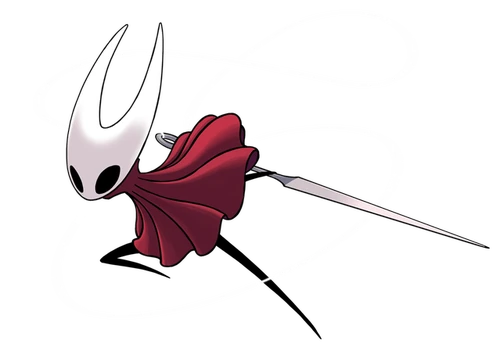
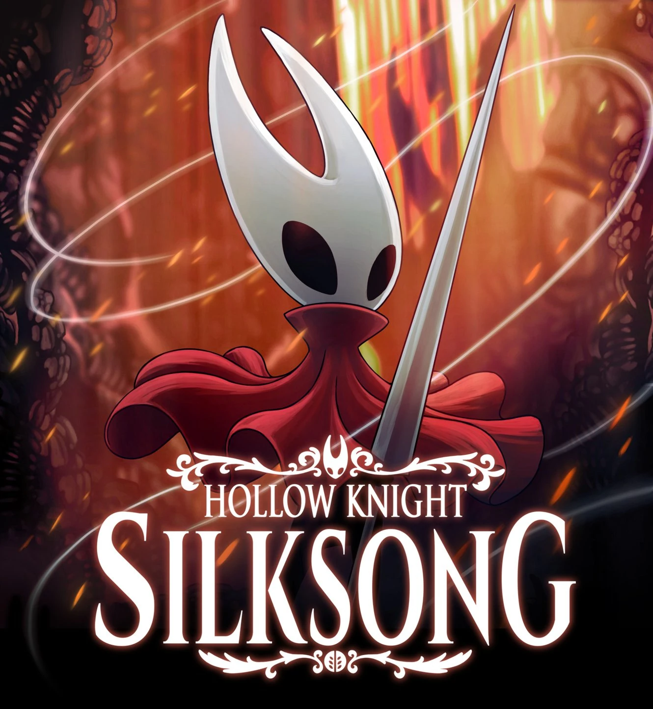

Hornet
Hornet es una guerrera hábil, princesa y protectora de las ruinas de Hallownest en el videojuego Hollow Knight y la protagonista de su secuela, Hollow Knight: Silksong.

Silksong
Hollow Knight: Silksong es un esperado videojuego metroidvania de acción y aventura en 2D desarrollado por Team Cherry.
